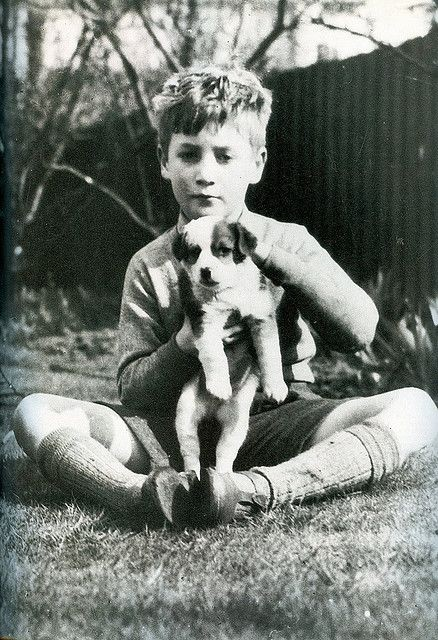

John Lennon
Born in Liverpool, Lennon became involved in the skiffle craze as a teenager. In 1956, he formed the Quarrymen, which evolved into the Beatles in 1960. Sometimes called "the smart Beatle", he was initially the group's de facto leader, a role gradually ceded to McCartney. Through his songwriting in the Beatles, Lennon embraced a myriad of musical influences, initially writing and co-writing rock and pop-oriented hit songs in the band's early years, then later incorporating experimental elements into his compositions in the latter half of the Beatles' career as his songs became known for their increasing innovation. Lennon soon expanded his work into other media by participating in numerous films, including How I Won the War, and authoring In His Own Write and A Spaniard in the Works, both collections of nonsense writings and line drawings. Starting with "All You Need Is Love", his songs were adopted as anthems by the anti-war movement and the larger counterculture of the 1960s. In 1969, he started the Plastic Ono Band with his second wife, the multimedia artist Yoko Ono, held the two-week-long anti-war demonstration Bed-ins for Peace, and left the Beatles to embark on a solo career.
Between 1968 and 1972, Lennon and Ono collaborated on many works, including a trilogy of avant-garde albums, several more films, his solo debut John Lennon/Plastic Ono Band, and the international top-10 singles "Give Peace a Chance", "Instant Karma!", "Imagine" and "Happy Xmas (War Is Over)". Moving to New York City in 1971, his criticism of the Vietnam War resulted in a three-year deportation attempt by the Nixon administration. Lennon and Ono separated from 1973 to 1975, during which time he produced Harry Nilsson's album Pussy Cats. He also had chart-topping collaborations with Elton John ("Whatever Gets You thru the Night") and David Bowie ("Fame"). Following a five-year hiatus, Lennon returned to music in 1980 with the Ono collaboration Double Fantasy. He was murdered by a Beatles fan, Mark David Chapman, three weeks after the album's release.
As a performer, writer or co-writer, Lennon had 25 number-one singles in the Billboard Hot 100 chart. Double Fantasy, his best-selling album, won the 1981 Grammy Award for Album of the Year. In 1982, Lennon won the Brit Award for Outstanding Contribution to Music. In 2002, Lennon was voted eighth in a BBC history poll of the 100 Greatest Britons. Rolling Stone ranked him the fifth-greatest singer and 38th greatest artist of all time. He was inducted into the Songwriters Hall of Fame (in 1997) and the Rock and Roll Hall of Fame (twice, as a member of the Beatles in 1988 and as a solo artist in 1994).
Early life
Lennon was born on 9 October 1940 at Liverpool Maternity Hospital to Julia (née Stanley) (1914–1958) and Alfred Lennon (1912–1976). Alfred was a merchant seaman of Irish descent who was away at the time of his son's birth.[3] His parents named him John Winston Lennon after his paternal grandfather, John "Jack" Lennon, and Prime Minister Winston Churchill.[4] His father was often away from home but sent regular pay cheques to 9 Newcastle Road, Liverpool, where Lennon lived with his mother;[5] the cheques stopped when he went absent without leave in February 1944.[6][7] When he eventually came home six months later, he offered to look after the family, but Julia, by then pregnant with another man's child, rejected the idea.[8] After her sister Mimi complained to Liverpool's Social Services twice, Julia gave her custody of Lennon.
In July 1946, Lennon's father visited her and took his son to Blackpool, secretly intending to emigrate to New Zealand with him.[9] Julia followed them – with her partner at the time, Bobby Dykins – and after a heated argument, his father forced the five-year-old to choose between them. In one account of this incident, Lennon twice chose his father, but as his mother walked away, he began to cry and followed her.[10] According to author Mark Lewisohn, however, Lennon's parents agreed that Julia should take him and give him a home. Billy Hall, who witnessed the incident, has said that the dramatic portrayal of a young John Lennon being forced to make a decision between his parents is inaccurate.[11] Lennon had no further contact with Alf for close to 20 years.
Throughout the rest of his childhood and adolescence, Lennon lived at Mendips, 251 Menlove Avenue, Woolton, with Mimi and her husband George Toogood Smith, who had no children of their own.[13] His aunt purchased volumes of short stories for him, and his uncle, a dairyman at his family's farm, bought him a mouth organ and engaged him in solving crossword puzzles.[14] Julia visited Mendips on a regular basis, and John often visited her at 1 Blomfield Road, Liverpool, where she played him Elvis Presley records, taught him the banjo, and showed him how to play "Ain't That a Shame" by Fats Domino.
He regularly visited his cousin Stanley Parkes, who lived in Fleetwood and took him on trips to local cinemas.[17] During the school holidays Parkes often visited Lennon with Leila Harvey, another cousin, and the three often travelled to Blackpool two or three times a week to watch shows. They would visit the Blackpool Tower Circus and see artists such as Dickie Valentine, Arthur Askey, Max Bygraves and Joe Loss, with Parkes recalling that Lennon particularly liked George Formby.[18] After Parkes's family moved to Scotland, the three cousins often spent their school holidays together there. Parkes recalled, "John, cousin Leila and I were very close. From Edinburgh we would drive up to the family croft at Durness, which was from about the time John was nine years old until he was about 16."[19] Lennon's uncle George died of a liver haemorrhage on 5 June 1955, aged 52.
Lennon was raised as an Anglican and attended Dovedale Primary School.[21] After passing his eleven-plus exam, he attended Quarry Bank High School in Liverpool from September 1952 to 1957, and was described by Harvey at the time as a "happy-go-lucky, good-humoured, easy going, lively lad".[22] However, he was also known to frequently engage in fights, bully and disrupt classes.[23] Despite this, he quickly built a reputation as the class clown[24] and often drew comical cartoons that appeared in his self-made school magazine, the Daily Howl.
In 1956, Julia bought John his first guitar. The instrument was an inexpensive Gallotone Champion acoustic for which she lent her son five pounds and ten shillings on the condition that the guitar be delivered to her own house and not Mimi's, knowing well that her sister was not supportive of her son's musical aspirations.[27] Mimi was sceptical of his claim that he would be famous one day, and she hoped that he would grow bored with music, often telling him, "The guitar's all very well, John, but you'll never make a living out of it.
On 15 July 1958, Julia Lennon was struck and killed by a car while she was walking home after visiting the Smiths' house.[29] His mother's death traumatised the teenage Lennon, who, for the next two years, drank heavily and frequently got into fights, consumed by a "blind rage".[30] Julia's memory would later serve as a major creative inspiration for Lennon, inspiring songs such as the 1968 Beatles song "Julia".
Lennon's senior school years were marked by a shift in his behaviour. Teachers at Quarry Bank High School described him thus: "He has too many wrong ambitions and his energy is often misplaced", and "His work always lacks effort. He is content to 'drift' instead of using his abilities."[32] Lennon's misbehaviour created a rift in his relationship with his aunt.
Lennon failed his O-level examinations, and was accepted into the Liverpool College of Art after his aunt and headmaster intervened.[33] At the college he began to wear Teddy Boy clothes and was threatened with expulsion for his behaviour.[34] In the description of Cynthia Powell, Lennon's fellow student and subsequently his wife, he was "thrown out of the college before his final year".